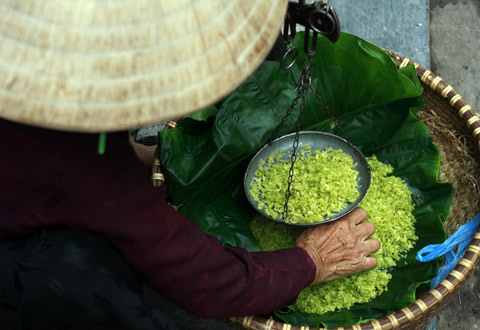

Ngẩn ngơ hương cốm thơm những ngày gió heo may
Cùng với hai mùa lúa chín, cốm gần như có quanh năm. Nhất là khi mỗi gia đình đều sắm cho mình một chiếc tủ lạnh, việc bảo quản cốm tươi cũng trở nên dễ dàng hơn. Vì thế, khi mùa đã tàn, người Hà Nội vẫn có thể níu giữ hương cốm tươi ở lại bên mình rất lâu.
Thế nhưng, ăn cốm, ngon nhất vẫn là vào mùa thu. Khi những giọt sương giăng tràn khắp lối, kéo theo cái lạnh se sẽ phả vào trong từng trận gió mùa, những chiếc lá sen đã dần chuyển già coong, kết đọng cái hương thơm tinh túy nhất của đất trời, cốm mùa thu bắt đầu theo chân những gánh hàng rong len vào từng ngõ hẻm. Nhờ được tiết trời ưu ái, vị cốm thu bao giờ cũng dẻo dai, trong xanh và ngát hương hơn mùa hè. Người Hà Nội tiếc nuối, vội vàng săn đón chút quà tao nhã cuối mùa của lúa non, cũng là vì thế.
Dẫu ngợi ca và yêu mến cốm đến đâu, người dân đất kinh kỳ cũng không mấy khi ăn cốm lấy nhiều. Dù đã cuối vụ và thêm chút luyến tiếc, khi ra phố, bắt gặp hàng cốm xanh thơm ngon, họ cũng chỉ lặng lẽ táp vào mua một vài lạng rồi đi, mang theo bọc cốm tươi tỏa hương ngào ngạt.
Chị Thanh Thủy (Cầu Giấy - Hà Nội) cho biết, cốm tươi không nên để lâu mà nên dùng hết trong ngày vì nếu không, hạt cốm thường bị cứng lại, mất đi vị dẻo dai vốn có. "Cốm tươi rất dễ hư nếu bảo quản không tốt, nhất là khi thời tiết ẩm ướt, chúng dễ bị mốc. Nếu để tủ lạnh lâu, hạt cốm sẽ bị cứng và khô. Nhà tôi thích ăn cốm nhưng chỉ dám mua từng chút một, ăn đến đâu, hết đến đấy", chị Thủy tâm sự.
Cốm có rất nhiều cách thưởng thức. Có thể ăn ngay hoặc chế biến cốm thành các món bánh cốm, cốm xào và chè cốm... Mỗi món có một sức hấp dẫn riêng nhưng tuyệt nhất vẫn là nhâm nhi những hạt cốm mộc. Ăn cốm tươi, người ta có cảm giác tất cả âm hưởng mùa thu tuyệt diệu đều đọng lại trên đầu lưỡi. Ở đó có hương sen thơm, có mùa lúa chín, chút vị cỏ dại của lá ráy, lạt buộc. Sắc cốm tươi xanh như ngọc bích, nổi trên màu thẫm biếc của lá sen già... màu sắc ấy như hòa tan trong khoảng không xanh biếc của vũ trụ trên cao. Mùa thu Hà Nội, có lẽ đẹp nhất cũng là đây.
